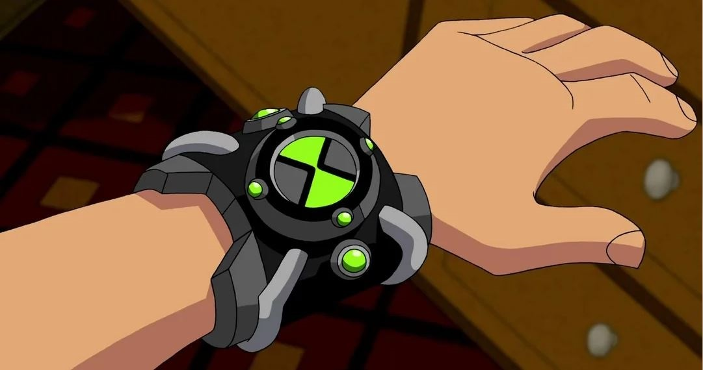
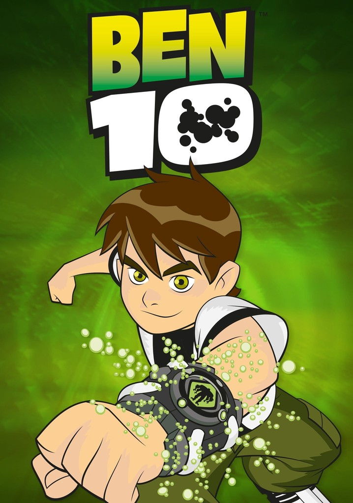

ALIENÍGENAS DEL OMNITRIX PROTOTIPO
La función del omnitrix prototipo es la de conservar todas las especies sapientes sin importar el paso del tiempo, sin embargo, al ser un prototipo, cuenta con varias fallas y no es tan práctico de utilizar.

FUEGO
El Pyronita que utilizó Ben 10 durante la serie fue llamado "Fuego" o "Heatblast" en inglés. Esta especie era proveniente de la estrella Pyros la cual era como un planeta y una estrella al mismo tiempo siendo este un lugar inestable con la capacidad de explotar en cualquier momento. Esta especie es capaz de quemar mucho más allá de lo que se puede lograr en la Tierra, siendo capaces de evaporar más de una montaña.
APARECE EN:



XLR-8
El kineceleran llamado "XLR-8" que suena como accelerate que en inglés significa acelerar que describe su habilidad especial. Esta especie es proveniente del planeta Kinet el cual es un mundo donde ser lento es morir ya que constantemente caen rayos los cuales son más rápidos y letales que los de la Tierra. La habilidad especial de este alienígena es capaz de correr a velocidades mayores a la luz con facilidad.
APARECE EN:
CUATRO BRAZOS
El alien llamado "Cuatro brazos" es de una especie llamada como "tetramand" el nombre proviene de la combinación de tetra y mand significando cuatro brazos que convenientemente así lo llamo Ben 10. Este alien proviene del planeta Khoros el cual es un desierto mortal y siendo un peligro para aquellos que no sepan combatir, por eso cada individuo es como un guerrero espartano. Son el doble de tamaño que un humano y poseen el doble de brazos y cada uno tiene una gran fuerza, también pueden haber de varios colores sin embargo el más común es el rojo.
APARECE EN:
DIAMANTE
El individuo que Ben 10 llamo como "Diamante" es un petrosapien que significa piedra pensante, lo cual es algo raro principalmente porque están hechos de un material cristalino. Su especie proviene de un planeta llamado como "Petropia" la cual está dividida en tres mundos distintos, siendo estos la superficie el subsuelo y las profundidades del planeta. Este alien posee la habilidad de generar, controlar a voluntad y modificar un material similar al diamante pero teniendo una mayor resistencia a todo lo de la Tierra.
APARECE EN:
BESTIA
Bestia es el nombre que le puso Ben 10 a la especie vulpinmancer la cual es rechazada en la mayoría de planetas y lugares públicos por ser descontrolados como perro con rabia. Este especie se volvió así porque su planeta (Vulpin) es un lugar de desechos para el resto del universo terminando en un lugar totalmente radiactivo y peligroso esto provoca que la especie que termine ahí se volverá salvaje. Posee una mayor fuerza a cualquier mamífero en la Tierra, siendo capaz de detectar presas de manera eficiente y cuentan con una gran capacidad de adaptación al entorno, siendo esta la razón de porque pueden vivir en casi todos los planetas.
APARECE EN:
INSECTOIDE
A lo largo de la serie Ben 10 utilizó un alien llamado "Insectoide" proveniente de la especie lepidoterran la cual creaba un desagrado visual para su prima (Gwen). Este alienigena proviene del planeta Lepidoterra el cual es un lugar totalmente selvático, siendo una selva gigante. Estos tienen muchas características de insectos terrestres, pueden volar a gran velocidad y son capaces de segregar una mucosidad super pegajosa.
APARECE EN:
ACUÁTICO
El pisccis volann que Ben 10 llamó "Acuático" provenía del planeta Pisccis el cual es un mundo completamente de agua sin nada sólido más que el núcleo, el cual es muy inestable y es necesario que haya un regulador de gravedad para que no se parta el planeta y poder mantenerlo unido. Durante toda la serie, Ben 10 no lo utilizó con tanta frecuencia por la limitación de no poder estar en tierra por mucho tiempo, pero sin importar eso fue muy util, ya que son monstruos de las profundidades capaces de andar en la tierra de forma bípeda por un tiempo limitado.
APARECE EN:
MATERIA GRIS
Materia gris fue el nombre que Ben 10 le puso a un galvan que proviene del planeta galvan prime el cual tuvo su momento donde la fauna estaba por todas partes y todo era un peligro, pero después gracias a Azmuth el planeta se volvió más equipado tecnológicamente siendo capaz de poder defenderse por sí solo en caso de haber un intruso queriendo entrar. Esta especie de ranas, a pesar de ser pequeños cuentan con un gran intelecto mayor a tres galaxias en algunos casos como lo es Azmuth o siendo muy buenos abogados al punto de no perder contra nadie.
APARECE EN:
ULTRA-T
Ultra-T es un mecamorfo galvanico que venía de la luna de galvan prime (Galvan B), este planeta fue creado por Azmuth por accidente tratando que sea habitable para su especie lo cual funcionó pero también hizo una nueva especie. Este alienígena es capaz de modificar su cuerpo a cualquier tecnología, mejorarla convirtiéndose en esa misma y lanzar un rayo de energía por su ojo.
APARECE EN:
FANTASMÁTICO
En el planeta anur phaetos existen los ectonuritas los cuales son la especie de "Fantasmático" su planeta de origen es desconocido en su mayoría pero se conoce que es siempre de noche y que no los conforta del todo ya que divagan por la galaxia para poder poseer otros cuerpos en otros planetas para sentirse cómodos. Este alien tiene la capacidad de volverse intangible, invisible, disparar rayos, abrir su pecho y utilizar los tentáculos de adentro, paralizar por miedo y poseer otros cuerpos.
APARECE EN:
CANNONBOLT
Los pelarota alburiano o como Ben 10 llamó al suyo "Cannonbollt" son nativos del planeta arburia donde estos se dedicaban a ser seres pacíficos hasta que llegó el "Grande" que empezó a succionar su planeta hasta destruirlo, despues de eso se dedicaron a vivir algunos en vulpin el planeta de bestia donde se volvieron agresivos. Este extraterrestre es capaz de enrollarse con sus placas de color amarillo que son muy resistentes y puede ir a grandes velocidades en esa forma atravesando casi todo lo que se encuentran.
APARECE EN:
WILDVINE
Este alien es un florauna de flors verdance que Ben 10 llamo "Wildvine" que hace referencia a una mala hierba viviente lo cual eso es porque es un nombre el cual le queda perfecto. Esta especie es capaz de habitar en cualquier planeta terrestre gracias al ser plantas. Esta especie son plantas vivientes capaces de modificar su cuerpo para atrapar a muchas presas, pueden hablar con las plantas, lanzar bombas que son sus frutos de la espalda y pueden camuflarse en cualquier entorno.
APARECE EN:
BLITZWOLFER O BEN LOBO
Blitzwolfer llamado por Ben 10 es un loboan que es de la luna lobo la cual es un planeta que orbita Anur Transyl (El planeta de Frankestrike), al no estar tan lejos a menudo los loboan se pasan a este planeta para vivir con sus vecinos de manera más cómoda convirtiéndose en unos grandes aliados para proteger el planeta de invasores como los incursianos. Este alien es similar a un hombre lobo pero con mayor fuerza y agilidad, poseen la habilidad de hacer un grito poderoso capaz de romper el material de los petrosapien.
APARECE EN:
SNARE-OH
Snare-Oh no tiene mucha información que se sepa de él, se sabe que es de la especie Thep Khufan, la cual es perteneciente del planeta Anur Kufhos. Estos están hechos totalmente de vendas capaces de regenerarse y extenderse a voluntad y son inmunes a altos niveles de radiación al no tener nada de cuerpo más que las vendas.
APARECE EN:
FRANKENSTRIKE
El transylian que Ben 10 llamó "Frankenstrike" proviene del planeta Anur Transyl, el cual tiene una población muy variada teniendo a sus nativos, a los loboan, a los anur khufos y a los ectonuritas. Gracias a todas las especies que viven se puede decir que en ese planeta vive el halloween y sus historias de terror. Este monstruo tiene una gran fuerza y la habilidad de generar alta voltaje gracias a sus torres tesla, además de ser capaz de andar en el espacio sin problema alguno por la gravedad gracias a los campos electromagnéticos que generan.
APARECE EN:
UPCHUCK
Upchuck es un gourmand que eran una especie que se dividía en murk y perk que son las dos variaciones de la especie que viven en un mismo planeta que es Peptos XI, el número del planeta proviene de que gracias a la habilidad de la especie, el planeta terminó en esa versión ya que los anteriores dejaron de existir. Los gourmand son una especie capaz de devorar todo con sus tres lenguas, dentro de su estómago es como un agujero negro y lo que dijieren lo transforman en energía que escupen al atacar.
APARECE EN:
DITTO
Los splixons son la especie del alien de Ben 10 "Ditto" provenientes del planeta Hathor el cual es un mundo muy variado ya que existen todos los biomas existentes de manera mezclada esto es útil para que sus habitantes puedan elegir donde les es más favorable vivir y sobrevivir de sus depredadores. Este alienígena por más que sea más pequeño que un humano ordinario tiene la capacidad de multiplicarse a voluntad, pero cada uno siente lo mismo que el otro.
APARECE EN:
MULTI OJOS
No se tiene mucha información acerca de Multi Ojos, se sabe que es un Opticoid proveniente del planeta Sightra. Este alien puede generar ojos en cualquier parte de su cuerpo para lanzar un rayo de energía y son muy débiles al sonido por sus orejas.
APARECE EN:
MEGA WHATTS
No se sabe mucho de este alien, se conoce que es un nosedeeniano perteneciente al planeta Nosideen Quassar. Se sabe que son baterías vivientes capaces de convertirse en corriente, absorber y devolver en forma de ataque la energía eléctrica y, al absorber, también pueden multiplicarse.
APARECE EN:
MUY GRANDE
No se sabe mucho acerca de este alienígena, proviene de la especie To'kustar, de cualquier planeta que sufra una tormenta cósmica. Es uno de los más grandes del universo y son capaces de generar, controlar y crear tormentas cósmicas a una gran velocidad
APARECE EN: